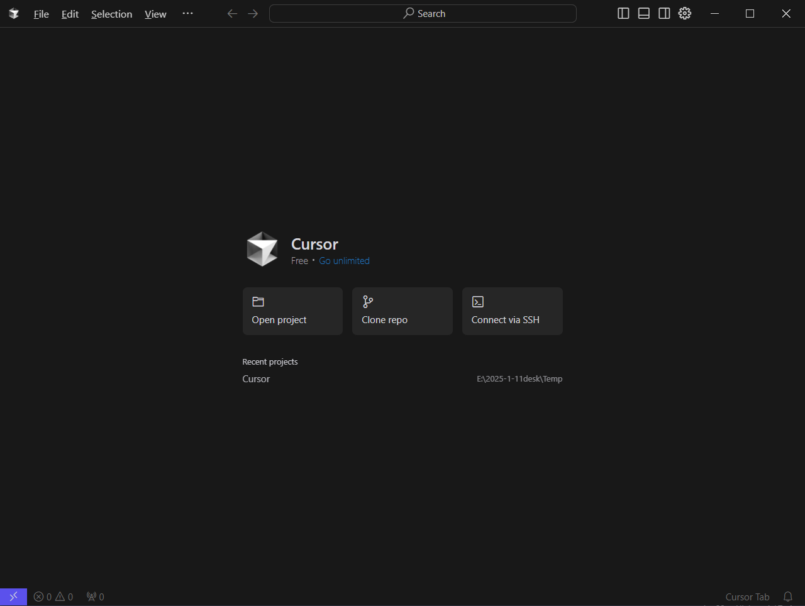

返回首页
效率工具大师课
Cursor 智能编程

智能补全：
基于GPT-4的上下文感知代码建议
代码导航：
Ctrl+Click快速跳转定义/引用
快捷键方案：
Ctrl+Shift+R
重构代码｜
Alt+Enter
快速修复
片段管理：
支持Markdown语法文档化代码模板
Trae 项目管理
看板视图：
支持Scrum敏捷开发工作流
团队协同：
实时评论+@mention通知机制
进度追踪：
自动生成燃尽图与资源负载报告
豆包智能问答
精准提问：
使用【背景+需求+约束】结构化模版
对话管理：
/reset清空上下文｜/export导出对话记录
高级配置：
调节temperature参数控制回答创造性
DeepSeek 调参指南
风格控制：
添加【formal】/【humorous】前缀指令
长度限制：
max_tokens=500避免冗余输出
行业模版：
使用!legal / !medical触发专业领域模式